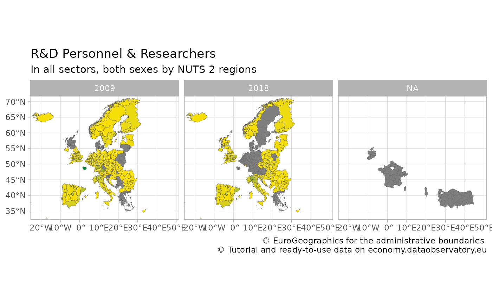
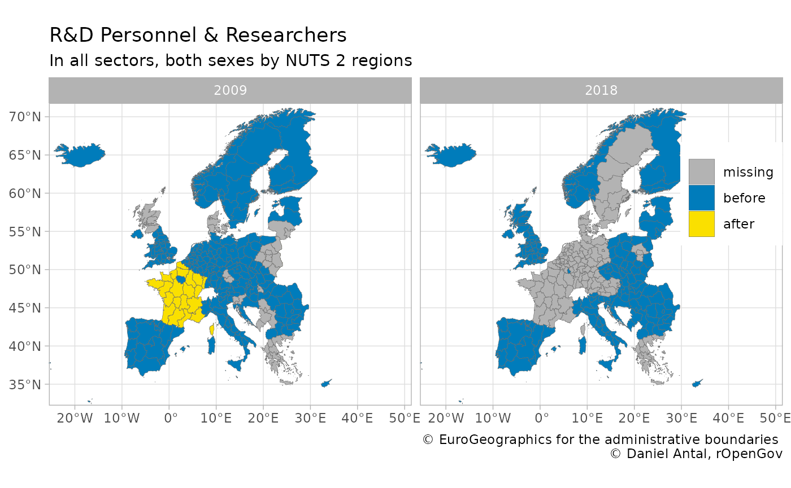

vignettes/website/mapping.Rmd
mapping.RmdThe regions package offers tools two work with regional statistics. It is an offspring of the eurostat package of rOpenGov, which offers data search, download, manipulation and visualization for Eurostat’s European statistics. While you can use regions for any European regional statistics, and with a limited functionality, any regional statistics from other parts of the world, this article provides a combined use case for the two packages.
Eurostat’s main function for data access is get_eurostat(), but in this case we will use the more specific get_eurostat_json to avoid downloading unnecessary aspects of this data product. Let us get a long-established regional dataset, the full-time equivalent (FTE) R&D workforce, in both sexes, in all sectors and all professional positions, and limit our data to two years only:
regional_rd_personnel <- eurostat::get_eurostat_json (
id = "rd_p_persreg",
filters = list (
sex = "T",
prof_pos = "TOTAL",
sectperf = "TOTAL",
unit = "FTE" )
)
regional_rd_personnel <- regional_rd_personnel %>%
filter ( .data$time %in% c("2009", "2018") ) We have saved this filtered datasets as regional_rd_personnel in the regions package.
data("regional_rd_personnel")We have quiet a few missing cases:
But this is not the only problem with the dataset.
Let us try to place the data on a ggplot2 map.
Let us download a map with get_eurostat_geospatial. We will use the NUTS2016, i.e., year = 2016, which is the regional boundary definition set in 2016 and used in the period 2018-2020. This is the most used definition in 2021.
map_nuts_2 <- eurostat::get_eurostat_geospatial(
resolution = "60",
nuts_level = "2",
year = 2016)
#> Loading required namespace: sf
#> old-style crs object detected; please recreate object with a recent sf::st_crs()
#> sf at resolution 1:60 read from local file
#> Warning in eurostat::get_eurostat_geospatial(resolution = "60", nuts_level =
#> "2", : Default of 'make_valid' for 'output_class="sf"' will be changed in the
#> future (see function details).You should always join your data with the geometric information of the regions starting from left with the map:
indicator_with_map <- map_nuts_2 %>%
left_join ( regional_rd_personnel, by = "geo" ) Huge parts of Europe are not covered, but the missing values are not randomly missing. France went under a regional reform; Turkey and Albania did not provide this data earlier. Ireland has no regional statistics available.
indicator_with_map %>%
ggplot () +
geom_sf(aes(fill=values),
color="dim grey", size=.1) +
scale_fill_gradient( low ="#FAE000", high = "#00843A") +
facet_wrap ( facets = "time") +
labs(title="R&D Personnel & Researchers",
subtitle = "In all sectors, both sexes by NUTS 2 regions",
caption="\ua9 EuroGeographics for the administrative boundaries
\ua9 Tutorial and ready-to-use data on economy.dataobservatory.eu",
fill = NULL) +
theme_light() +
theme(legend.position="none") +
coord_sf(xlim=c(-22,48), ylim=c(34,70))
Some of these problems are real missing data problems, but some of them are coding problem. In other words, the data is there, but it is not conforming the boundaries that you have on the NUTS2016 map. First we need to validate the geographical coding of the dataset. This is the task of validate_nuts_regions().
validated_indicator <- regions::validate_nuts_regions(regional_rd_personnel)If we validate the dataset, we will see many interesting metadata observations.
library(dplyr)
validation_summary_2016 <- validated_indicator %>%
group_by ( .data$time, .data$typology) %>%
summarize ( observations = n(),
values_missing = sum(is.na(.data$values)),
values_present = sum(!is.na(.data$values)),
valid_present = values_present /observations)Even though the dataset is called R&D personnel and researchers by sector of performance, sex and NUTS 2 regions (rd_p_persreg), in fact, it contains data on country and NUTS1 levels. And it has data on non-EU countries that in 2009 were not part of the NUTS system.
validation_summary_2016 %>%
ungroup() %>%
filter (.data$time == "2009")
#> # A tibble: 7 × 6
#> time typology observations values_missing values_present valid_present
#> <chr> <chr> <int> <int> <int> <dbl>
#> 1 2009 country 28 1 27 0.964
#> 2 2009 non_eu_country 7 2 5 0.714
#> 3 2009 non_eu_nuts_level_1 7 4 3 0.429
#> 4 2009 non_eu_nuts_level_2 10 5 5 0.5
#> 5 2009 nuts_level_1 105 14 91 0.867
#> 6 2009 nuts_level_2 265 49 216 0.815
#> 7 2009 <NA> 56 3 53 0.946The situation is not better in 2018:
validation_summary_2016 %>%
ungroup() %>%
filter (.data$time == "2018")
#> # A tibble: 7 × 6
#> time typology observations values_missing values_present valid_present
#> <chr> <chr> <int> <int> <int> <dbl>
#> 1 2018 country 28 0 28 1
#> 2 2018 non_eu_country 7 1 6 0.857
#> 3 2018 non_eu_nuts_level_1 7 1 6 0.857
#> 4 2018 non_eu_nuts_level_2 10 0 10 1
#> 5 2018 nuts_level_1 105 45 60 0.571
#> 6 2018 nuts_level_2 265 113 152 0.574
#> 7 2018 <NA> 56 45 11 0.196The dataset is plagued with data that has no place in the NUTS2016 boundary definition, and therefore on a NUTS2016 map!
What are the non-conforming bits?
validated_indicator %>%
filter ( ! .data$valid_2016 ) %>%
select ( all_of("geo") ) %>%
unlist %>% as.character()
#> [1] "BA" "BA" "CN_X_HK" "CN_X_HK" "EA19" "EA19"
#> [7] "EU27_2020" "EU27_2020" "EU28" "EU28" "FR2" "FR2"
#> [13] "FR21" "FR21" "FR22" "FR22" "FR23" "FR23"
#> [19] "FR24" "FR24" "FR25" "FR25" "FR26" "FR26"
#> [25] "FR3" "FR3" "FR30" "FR30" "FR4" "FR4"
#> [31] "FR41" "FR41" "FR42" "FR42" "FR43" "FR43"
#> [37] "FR5" "FR5" "FR51" "FR51" "FR52" "FR52"
#> [43] "FR53" "FR53" "FR6" "FR6" "FR61" "FR61"
#> [49] "FR62" "FR62" "FR63" "FR63" "FR7" "FR7"
#> [55] "FR71" "FR71" "FR72" "FR72" "FR8" "FR8"
#> [61] "FR81" "FR81" "FR82" "FR82" "FR83" "FR83"
#> [67] "FRA" "FRA" "HR02" "HR02" "HU10" "HU10"
#> [73] "IE01" "IE01" "IE02" "IE02" "JP" "JP"
#> [79] "KR" "KR" "LT00" "LT00" "NO01" "NO01"
#> [85] "NO03" "NO03" "NO04" "NO04" "NO05" "NO05"
#> [91] "PL1" "PL1" "PL11" "PL11" "PL12" "PL12"
#> [97] "PL3" "PL3" "PL31" "PL31" "PL32" "PL32"
#> [103] "PL33" "PL33" "PL34" "PL34" "RU" "RU"
#> [109] "UKM2" "UKM2" "UKM3" "UKM3"The question is, can we save some of the French data? If the boundaries of regions changed, then we cannot: somebody must reaggregate the number of researchers who used to work in the newly defined region back then, before the reform.
But in some cases, the regional boundaries did not change, only the name and the code of the region, which is the task performed by recode_nuts():
recoded_indicator <- regional_rd_personnel %>%
regions::recode_nuts(
geo_var = "geo", # your geograhical ID variable name
nuts_year = 2016 # change this for other definitions
)
recoding_summary <- recoded_indicator %>%
mutate ( observations = nrow(.data)) %>%
mutate ( typology_change = ifelse ( grepl("Recoded", .data$typology_change),
yes = "Recoded",
no = .data$typology_change) ) %>%
group_by ( .data$typology_change, .data$time ) %>%
summarize ( values_missing = sum(is.na(.data$values)),
values_present = sum(!is.na(.data$values)),
pct = values_present / (values_present + values_missing ))Let us take a look at the problems identified by regions::recode_nuts():
recoding_summary
#> # A tibble: 12 × 5
#> # Groups: typology_change [6]
#> typology_change time values_missing values_present pct
#> <chr> <chr> <int> <int> <dbl>
#> 1 Not found in NUTS 2009 1 11 0.917
#> 2 Not found in NUTS 2018 1 11 0.917
#> 3 Recoded 2009 12 42 0.778
#> 4 Recoded 2018 32 22 0.407
#> 5 unchanged 2009 64 334 0.839
#> 6 unchanged 2018 158 240 0.603
#> 7 Used in NUTS 1999-2013 2009 1 7 0.875
#> 8 Used in NUTS 1999-2013 2018 8 0 0
#> 9 Used in NUTS 2006-2013 2009 0 5 1
#> 10 Used in NUTS 2006-2013 2018 5 0 0
#> 11 Used in NUTS 2021-2021 2009 0 1 1
#> 12 Used in NUTS 2021-2021 2018 1 0 0We were able to recode quite a few data points to the NUTS2016 definition for the time of observation 2009 as well as 2018. Sometimes we are recoding rows that have missing values, which does not help that much: we know where the data should be, but it is missing anyway. But particularly for the year 2009 we can save plenty of data by recorded the obsolete coding.
We identify further problems. We have coding the that was used in various time periods, but there is no clear recoding possibility, because the regions boundaries have changed. To have the history of the data, we would need to recalculate them, say, by adding up the R&D personnel from each settlement in the new regional boundary.
The following non-empty cases were present in the dataset, just not with the coding that we used in the 2018-2020 period (i.e., the NUTS2016 coding.) We are able to save 27 observations just by fixing the regional codes!
recoded_indicator %>%
filter ( .data$typology == "nuts_level_2" ) %>%
filter ( !is.na(.data$typology_change) ) %>%
filter (
# Keep only pairs where we actually save
# non-missing observations
!is.na(values) ) %>%
distinct ( .data$geo, .data$code_2016 ) %>%
filter (
# We filter out cases of countries who
# joined the NUTS system later
.data$geo != .data$code_2016 )
#> # A tibble: 27 × 2
#> geo code_2016
#> <chr> <chr>
#> 1 FR21 FRF2
#> 2 FR22 FRE2
#> 3 FR23 FRD2
#> 4 FR24 FRB0
#> 5 FR25 FRD1
#> 6 FR26 FRC1
#> 7 FR3 FRE1
#> 8 FR30 FRE1
#> 9 FR41 FRF3
#> 10 FR42 FRF1
#> # … with 17 more rowsSo, let us do the trick: change the geo variable to code_2016, which is, whenever there is an equivalent geo code in the NUTS2016 definition, the data that you should have. Your original geo variable contains codes that were used, for example, in the NUTS2010 or NUTS2013 boundary definitions.
recoded_with_map <- map_nuts_2 %>%
left_join (
recoded_indicator %>%
mutate (geo = .data$code_2016),
by = "geo" ) Let us make our work visible by creating three observation type variables:
missing which is not present in the dataset;before which were correctly coded before our recoding;after which became visible after recoding.
regional_rd_personnel_recoded <- recoded_indicator %>%
mutate ( geo = .data$code_2016 ) %>%
rename ( values_2016 = .data$values ) %>%
select ( -all_of(c("typology", "typology_change", "code_2016"))) %>%
full_join (
regional_rd_personnel,
by = c("prof_pos", "sex", "sectperf", "unit", "geo", "time")
) %>%
mutate ( type = case_when (
is.na(.data$values_2016) & is.na(.data$values) ~ "missing",
is.na(.data$values) ~ "after",
TRUE ~ "before"
))And let’s place it now on the map:
map_nuts_2 %>%
left_join ( regional_rd_personnel_recoded , by = "geo") %>%
filter (
# remove completely missing cases
!is.na(.data$time) ) %>%
ggplot () +
geom_sf(aes(fill=type),
color="dim grey", size=.1) +
scale_fill_manual ( values = c( "#FAE000", "#007CBB", "grey70") ) +
guides(fill = guide_legend(reverse=T, title = NULL)) +
facet_wrap ( facets = "time") +
labs(title="R&D Personnel & Researchers",
subtitle = "In all sectors, both sexes by NUTS 2 regions",
caption="\ua9 EuroGeographics for the administrative boundaries
\ua9 Daniel Antal, rOpenGov",
fill = NULL) +
theme_light() +
theme(legend.position=c(.93,.7)) +
coord_sf(xlim=c(-22,48), ylim=c(34,70))
We did improve our dataset, and this improvement would not have worked with traditional imputation techniques very well. For example, replacing the missing French data with the median value of Europe would have created a huge bias in our dataset.
This example is a simplification. There are many territorial typologies in use in Europe and globally, but the main takeaway is clear: sub-national boundaries are changing very fast, and you must make sure that you join datasets, or data with a map with the same boundary definitions.
This tutorial was created with
sessionInfo()
#> R version 4.1.1 (2021-08-10)
#> Platform: x86_64-pc-linux-gnu (64-bit)
#> Running under: Ubuntu 20.04.3 LTS
#>
#> Matrix products: default
#> BLAS: /usr/lib/x86_64-linux-gnu/blas/libblas.so.3.9.0
#> LAPACK: /usr/lib/x86_64-linux-gnu/lapack/liblapack.so.3.9.0
#>
#> locale:
#> [1] LC_CTYPE=C.UTF-8 LC_NUMERIC=C LC_TIME=C.UTF-8
#> [4] LC_COLLATE=C.UTF-8 LC_MONETARY=C.UTF-8 LC_MESSAGES=C.UTF-8
#> [7] LC_PAPER=C.UTF-8 LC_NAME=C LC_ADDRESS=C
#> [10] LC_TELEPHONE=C LC_MEASUREMENT=C.UTF-8 LC_IDENTIFICATION=C
#>
#> attached base packages:
#> [1] stats graphics grDevices utils datasets methods base
#>
#> other attached packages:
#> [1] ggplot2_3.3.5 dplyr_1.0.7 eurostat_3.7.7 regions_0.1.8
#>
#> loaded via a namespace (and not attached):
#> [1] Rcpp_1.0.7 lubridate_1.7.10 here_1.0.1 countrycode_1.3.0
#> [5] tidyr_1.1.3 class_7.3-19 assertthat_0.2.1 rprojroot_2.0.2
#> [9] digest_0.6.27 utf8_1.2.2 R6_2.5.1 cellranger_1.1.0
#> [13] plyr_1.8.6 backports_1.2.1 evaluate_0.14 e1071_1.7-8
#> [17] highr_0.9 httr_1.4.2 pillar_1.6.2 rlang_0.4.11
#> [21] curl_4.3.2 readxl_1.3.1 rmarkdown_2.10 pkgdown_1.6.1
#> [25] textshaping_0.3.5 desc_1.3.0 RefManageR_1.3.0 readr_2.0.1
#> [29] stringr_1.4.0 munsell_0.5.0 proxy_0.4-26 broom_0.7.9
#> [33] compiler_4.1.1 xfun_0.25 pkgconfig_2.0.3 systemfonts_1.0.2
#> [37] htmltools_0.5.2 tidyselect_1.1.1 tibble_3.1.4 fansi_0.5.0
#> [41] sf_1.0-2 withr_2.4.2 crayon_1.4.1 tzdb_0.1.2
#> [45] wk_0.5.0 grid_4.1.1 DBI_1.1.1 jsonlite_1.7.2
#> [49] gtable_0.3.0 lifecycle_1.0.0 magrittr_2.0.1 units_0.7-2
#> [53] scales_1.1.1 KernSmooth_2.23-20 cli_3.0.1 stringi_1.7.4
#> [57] cachem_1.0.6 farver_2.1.0 fs_1.5.0 xml2_1.3.2
#> [61] ellipsis_0.3.2 ragg_1.1.3 generics_0.1.0 vctrs_0.3.8
#> [65] s2_1.0.6 tools_4.1.1 glue_1.4.2 purrr_0.3.4
#> [69] hms_1.1.0 fastmap_1.1.0 yaml_2.2.1 colorspace_2.0-2
#> [73] classInt_0.4-3 memoise_2.0.0 knitr_1.34